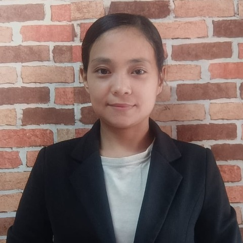

Myanmar · 32 · Children over five, cooking & household
In Singapore since January 2025, with young children in both of her homes — two children in her first, and the cooking and the household alongside them in each.
Trust signals
At a glance
The essentials
Available from
By 5 November 2026. Transfer within Singapore.
Children she has cared for
Two young children in her first Singapore home; a baby in the family she is with now. She is happiest with children over five.
Where she is now
Since October 2025 — a household of four in an HDB flat, with a small baby, the cooking and the house.
Elderly care
She has not done eldercare in Singapore, but is open to a household with an elderly parent.
Languages
Myanmar, and simple English.
Why she is available
Baby care isn’t where she is strongest, and her current family need someone for their small baby. She would like a home with children over five.
In Singapore since January 2025, with two families.
January to August 2025. Her first Singapore household — a family of four in an HDB flat, with two young children, the cooking and the house. The placement ended after seven months.
October 2025 to now. A household of four in an HDB flat, with a small baby, the cooking and the house. Baby care isn’t where she is strongest, and the family need someone for their baby, so she is looking for her next home by 5 November.
Where she’d suit next. A family with children over five, where she can look after them alongside the cooking and the house — or a household with an elderly parent, which she is open to, though she has not done eldercare in Singapore. She speaks Myanmar and simple English.
Her employment record and her full work history are available to interested families, with her consent.
Tell us a little about your household and we’ll be in touch within 1–2 business days. We’ll only move forward if it feels like a genuine fit.